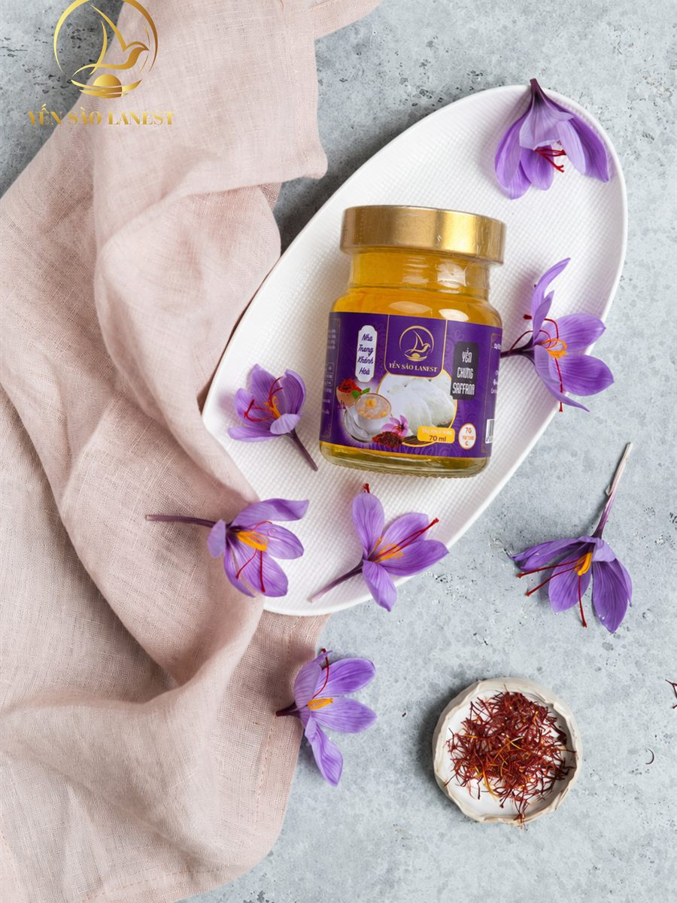
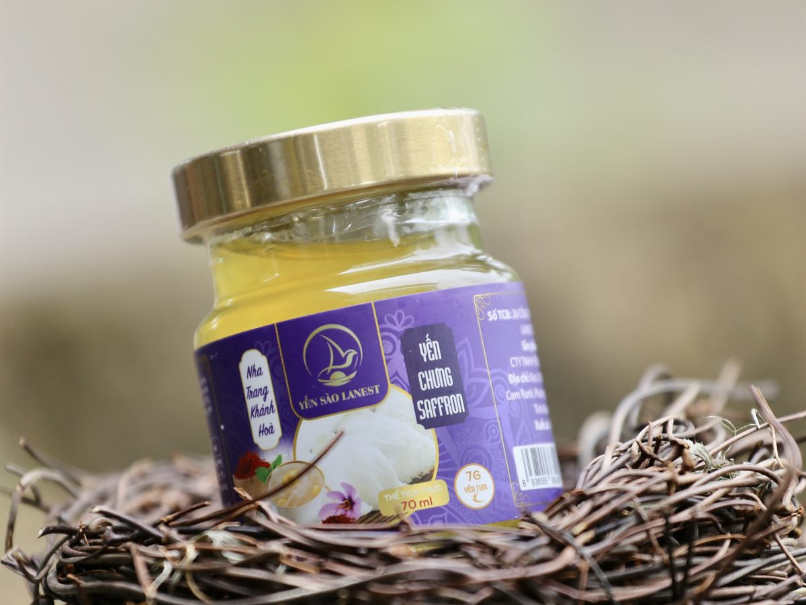

Yến Chưng Saffron: Trong Hũ Có Gì, Hợp Với Ai Và Cách Dùng
Yến Sào Lanest · Đăng ngày 09/11/2026

Trong 14 vị yến hũ của Lanest, yến chưng saffron là hũ dễ nhận ra nhất: nhãn tím, nước yến ngả vàng óng. Nhiều khách hỏi saffron là gì, một hũ có bao nhiêu, uống có khác vị đường phèn không. Bài này trả lời từng câu dựa trên nhãn và tài liệu sản phẩm của Lanest, kèm cách dùng và những điều nên biết nếu muốn tự chưng yến saffron ở nhà.
Hũ yến chưng saffron 70ml bên hoa nghệ tây và một đĩa nhỏ nhụy saffron khô
1. Saffron là gì, vì sao đem chưng cùng yến?
Saffron là nhụy hoa nghệ tây, những sợi nhỏ màu đỏ nằm giữa bông hoa tím như trong ảnh. Tài liệu giới thiệu sản phẩm của Lanest gọi saffron là loại thảo mộc quý, được mệnh danh là "vàng đỏ" của Trung Đông.
Chỉ cần một lượng rất nhỏ, saffron đã đủ nhuộm vàng nước chưng và để lại mùi thơm riêng. Vì vậy saffron hợp với yến: không lấn vị yến như táo đỏ hay long nhãn, mà thêm một lớp hương nhẹ, nhìn cũng đẹp mắt hơn. Theo tài liệu sản phẩm, yến chưng saffron có vị thanh ngọt, thoang thoảng hương saffron.
2. Trong một hũ yến chưng saffron Lanest có gì?
Yến chưng saffron thuộc dòng yến hũ 7g yến tươi, hũ thủy tinh 70ml. Thành phần in trên nhãn, theo thứ tự:
| Thành phần | Ghi chú |
| Nước, yến tươi 7g | Phần chính của hũ |
| Đường phèn | Vị ngọt nền, giống các vị 7g khác |
| Saffron 2mg | Nguyên liệu tạo vị và màu của hũ |
| Collagen thủy phân, chất xơ inulin | Có trong các vị 7g dành cho người lớn |
| Chất điều chỉnh độ acid INS 327, 331(iii); chất ổn định INS 401, 407, 415, 466 | Ghi rõ mã trên nhãn |
| Hương yến tổng hợp | Ghi rõ trên nhãn |
Nhãn ghi không chất bảo quản, không màu nhân tạo. Màu vàng của nước yến đến từ saffron, không phải phẩm màu. Hũ 7g có phụ gia ghi rõ trên nhãn, nên Lanest không gọi dòng này là "100% yến". Muốn đọc nhãn kỹ hơn, anh chị xem bài cách đọc nhãn yến hũ.
3. Yến chưng saffron hỗ trợ gì?
Bản mô tả từng vị của Lanest ghi yến chưng saffron:
- Hỗ trợ chống oxy hóa, nâng cao sức khỏe.
- Hỗ trợ cải thiện làn da, làm chậm lão hóa.
- Hỗ trợ thư giãn tinh thần, cải thiện giấc ngủ.
- Hỗ trợ tăng cường sức đề kháng.
Tất cả đều ở mức "hỗ trợ". Yến chưng saffron là thực phẩm, không phải là thuốc và không có tác dụng thay thế thuốc chữa bệnh. Người đang điều trị bệnh, đang mang thai hoặc đang dùng thuốc nên hỏi bác sĩ trước khi dùng thường xuyên.

Nước yến chưng saffron ngả vàng óng, nhìn rõ qua thành hũ thủy tinh
4. Yến chưng saffron hợp với ai?
Theo tài liệu sản phẩm, đối tượng gợi ý cho vị saffron là phụ nữ, người chăm sóc sắc đẹp và người thường xuyên căng thẳng. Từ đó, có thể chọn theo nhu cầu:
- Chị em bận rộn muốn một hũ yến tiện mang theo, mở nắp là uống.
- Người làm việc căng thẳng, hay ngủ muộn, muốn đổi vị so với đường phèn quen thuộc.
- Người mua làm quà: nhãn tím, nước vàng, nhìn sang hơn hẳn trong một hộp nhiều vị.
Nếu trong nhà có trẻ nhỏ, nên chọn vị dành riêng cho trẻ em. Hai vị trẻ em của Lanest ghi "từ 1 tuổi trở lên" và không có collagen. Danh sách vị và đối tượng đầy đủ có trong bài 14 vị yến chưng, chọn vị nào.
5. Dùng yến hũ saffron thế nào cho ngon?
- Dùng ngay sau khi mở nắp, hoặc chưng cách thủy nếu thích uống ấm. Đây là hướng dẫn in cho dòng 7g.
- Chọn thời điểm bụng nhẹ. Cẩm nang của Lanest gợi ý buổi tối trước khi ngủ khoảng một tiếng, hoặc sáng sớm. Không uống ngay sau bữa chính.
- Uống đều, không dồn. Người trưởng thành dùng khoảng 2–3 lần mỗi tuần là đủ, nhiều nhất 3–5 lần. Kiên trì dùng đều thay vì uống liền vài hũ rồi bỏ ngang.
- Mở nắp rồi thì cất lạnh và dùng sớm.
Ai muốn đổi vị trong tuần có thể xen saffron với hạt chia, nhân sâm hoặc long nhãn, như gợi ý trong bài yến chưng cho dân văn phòng.
6. Muốn tự chưng yến saffron tại nhà
Tài liệu của Lanest chưa có công thức riêng cho yến saffron tự chưng, nên bài này không đưa ra định lượng nhụy. Anh chị có thể làm theo các bước chưng yến cơ bản Lanest đang hướng dẫn:
- Ngâm tổ yến tinh chế trong nước lạnh 30–40 phút cho nở đều, mềm. Không ngâm nước ấm hay nóng.
- Cho yến vào thố sứ hoặc hũ thủy tinh chịu nhiệt, đổ nước vừa ngập, đậy nắp.
- Chưng cách thủy lửa nhỏ 20–30 phút. Yến chín khi nước có bọt tăm nhẹ và sợi yến nổi lên. Không chưng quá lâu kẻo yến nát.
- Cho đường phèn khoảng 5 phút trước khi tắt bếp.
Với saffron, nhớ hũ 70ml của Lanest chỉ có 2mg nhụy, nghĩa là rất ít. Cho dè dặt vài sợi, nếm thử rồi mới thêm. Mỗi lần chỉ chưng vừa đủ ăn trong 1–2 ngày và cất ngăn mát. Các bước chi tiết có trong bài hướng dẫn chưng yến đúng cách.
Câu hỏi thường gặp
Nước yến saffron màu vàng có phải do phẩm màu không?
Không. Nhãn yến chưng saffron Lanest ghi không màu nhân tạo; màu vàng là màu tự nhiên của nhụy saffron khi ngâm trong nước.
Một hũ yến chưng saffron có bao nhiêu yến?
Mỗi hũ 70ml có 7g yến tươi và 2mg saffron, theo thành phần in trên nhãn.
Uống lạnh hay hâm nóng?
Tùy khẩu vị. Có thể dùng ngay, hoặc chưng cách thủy nếu thích uống ấm. Không đun sôi trực tiếp.